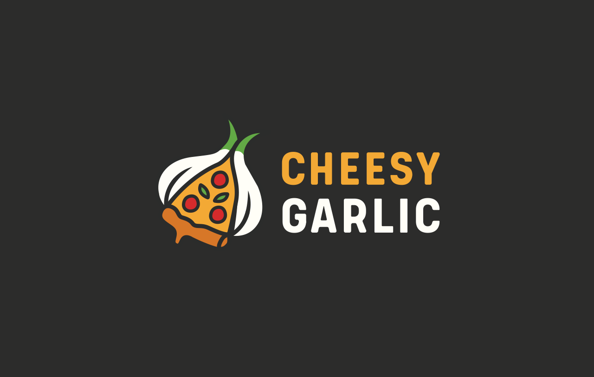
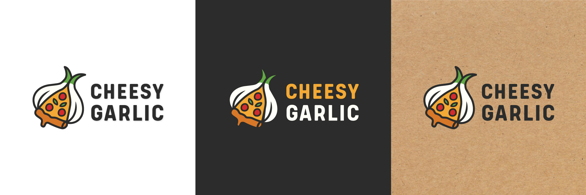
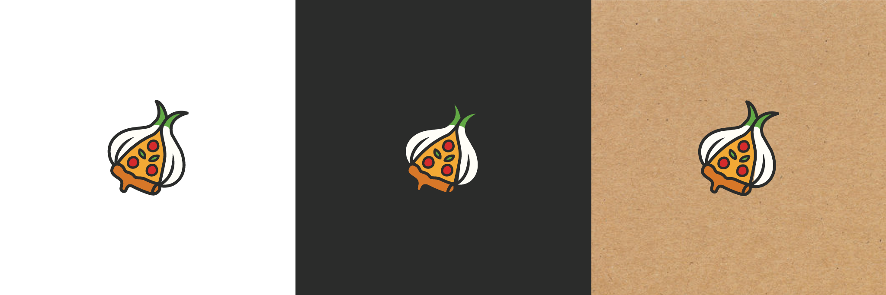
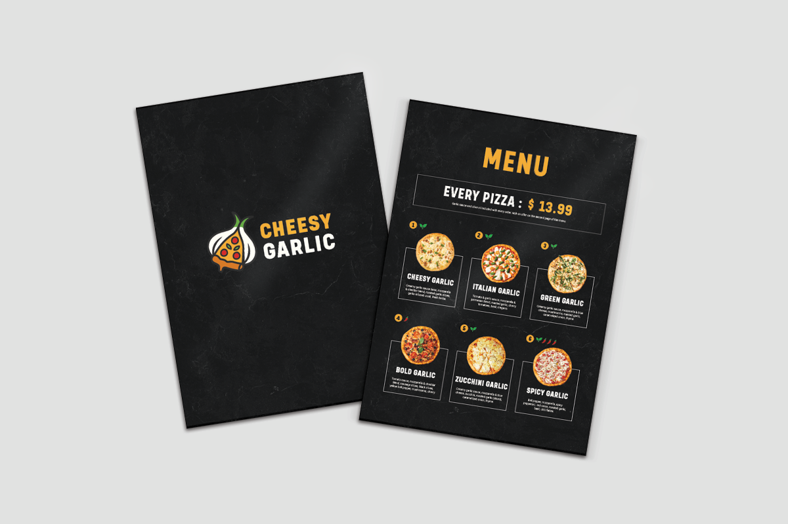

Cheesy Garlic
Logo design
Logo for a pizza food truck specializing in garlic-infused creations — from garlic crust and creamy ranch to roasted garlic toppings and more. Bold, flavorful, and unapologetically garlicky.

Logo design
Cheesy Garlic logo in various color versions, with text.

Logo design
Cheesy Garlic logo in various color versions, without text.

Logo usage examples
Cheesy Garlic logo and sample applications on the menu, pizza boxes, staff uniforms, and the food truck.
